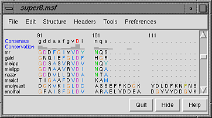
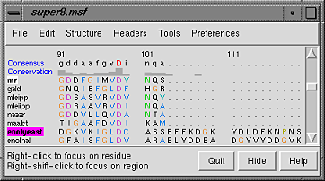
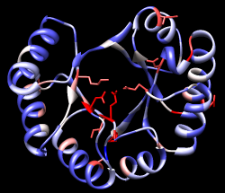

This tutorial is an introduction to working with sequence alignments and associated structures using Multalign Viewer. Data are taken from the enolase superfamily:
The enolase superfamily: a general strategy for enzyme-catalyzed abstraction of the alpha-protons of carboxylic acids. Babbitt PC, Hasson MS, Wedekind JE, Palmer DR, Barrett WC, Reed GH, Rayment I, Ringe D, Kenyon GL, Gerlt JA. Biochemistry. 1996 Dec 24;35(51):16489-501.To follow along, first download the sequence alignment file super8.msf to a convenient location. This sequence alignment contains the barrel domains of eight enolase superfamily members.
On Windows/Mac, click the chimera icon; on UNIX, start Chimera from the system prompt:
unix: chimeraA splash screen will appear, to be replaced in a few seconds by the main Chimera window. Choose File... Open, then locate and open super8.msf. Opening a sequence alignment file automatically starts Multalign Viewer and uses it to display the alignment.
Multalign Viewer has its own set of preferences, including several that control display. From the alignment window menu, choose Preferences... Appearance and adjust the line-wrapping behavior, font, and color scheme for Multiple alignments as desired. Close the preferences dialog.
Size and place the sequence window and main Chimera window so that both are visible. If the sequence window becomes obscured at any point, it can be raised from the Chimera Tools menu (Tools... MAV - super8.msf... Raise).
| Multalign Viewer sequence window |
|---|
|  |
Sequence names are shown on the left, and a Consensus sequence and Conservation histogram are shown above the sequences. Red capital letters in the consensus sequence indicate a few positions in which all of the sequences have the same type of residue.
The first sequence in the alignment, named mr, corresponds to the barrel domain of mandelate racemase from Pseudomonas putida. The next-to-the last sequence in the alignment, named enolyeast, corresponds to the barrel domain of enolase from Saccharomyces cerevisiae. There are multiple structures in the Protein Data Bank for each of these sequences; 2mnr (mandelate racemase) and 4enl (enolase) are used in this tutorial.
If you have internet connectivity, structures can be obtained directly from the Protein Data Bank. Choose File... Fetch by ID from the Chimera menu. In the resulting dialog, check the PDB option (if it is not already checked) and the option to Keep dialog up after Fetch. Fetch 2mnr, then 4enl, and then Close the dialog. If you do not have internet connectivity, instead download the files 2mnr.pdb and 4enl.pdb included with this tutorial and open them in that order with File... Open.
The view is initially centered on a protein colored white, the mandelate racemase structure. Off to the side and possibly out of view is the enolase structure, which is colored magenta. Use the menu to bring everything within view:
Actions... FocusApply the ribbons preset (which may or may not change the appearance, depending on your preference settings):
Presets... Interactive 1 (ribbons)Move and scale the structures as desired throughout the tutorial.
| sequence window after structure association |
|---|
|  |
Notice that in the sequence window, the sequence names mr and enolyeast are now shown in bold within boxes colored white and magenta, respectively. Each structure was automatically associated with its best-matching sequence, and the colors indicate the pairing.
Association enables several types of crosstalk, which will be explored in more detail below:
First, we will use the sequence alignment to guide a structural match. From the Multalign Viewer menu, choose Structure... Match and click Apply without checking any boxes. This superimposes the structures using the alpha-carbons of all pairs of residues aligned in the sequence alignment. Readjust the view to focus on the structures:
Actions... FocusMatch statistics are reported briefly in the status line and are written to the Reply Log (Tools... Utilities... Reply Log). The match is fairly rough, giving an RMSD of 8.4 Å. Apparently, not all 175 pairs of residues in the same columns of the sequence alignment superimpose well in space. Try the structure matching again, but this time, turn on the option to Iterate by pruning... and edit the angstrom value to 1.0 before clicking OK. This improves the superposition of the most similar parts of the structures by omitting other parts from the fit.
| active sites |
|---|
|
The structures have N-terminal and barrel domains, but only the barrel domains are included in the sequence alignment. With the mouse, drag a box to highlight the entire sequence alignment. That will select the corresponding parts of the proteins. Invert the selection to the parts of the proteins not included in the sequence alignment, then hide the ribbon for those parts:
Select... Invert (all models)Boxes drawn on the alignment are called regions. A single region may consist of several disconnected boxes. The active region is shown with a dashed outline. Delete the active region by clicking in some blank area of the sequence window (not on the sequences) to make sure this window has the mouse focus, then pressing the keyboard delete key. If the region is not active (the border is not dashed), first click on the region to activate it, then press delete.
Actions... Ribbon... hide
Select... Clear Selection
Communication also goes in the opposite direction: a selection in the structures is shown on the sequence alignment as a region. For example, select all aromatic residues in the structures:
Select... Residue... amino acid category... aromaticThe selection region is green. Clear the selection by Ctrl-clicking in an empty part of the graphics window.
Placing the cursor over any structure-associated residue in the sequence alignment shows the corresponding structure residue number near the bottom of the sequence window. For example, clicking into the sequence window and then placing the cursor over the first residue in the mr sequence shows that it is associated with Val 134 in chain A of model #0 (2mnr, mandelate racemase).
Next, see where some of the conserved residues are within the structures. In the sequence window, find the first completely conserved residue in the alignment. It is an aspartic acid, D, at alignment position 99. Drag with the mouse to create a region containing just that column of the alignment. The corresponding structure residues will be selected.
These aspartic acid residues are already displayed because the ribbons preset (used above) shows not just ribbons, but also bound molecules, ions, and nearby sidechains. Several of the highly conserved residues ligate a catalytically important metal ion. Clicking into the graphics window and then hovering the cursor over the ions shows that they are manganese and zinc, respectively.
At alignment position 150, there is a completely conserved proline (P). Create another region for this column (this time, press Ctrl along with the mouse button to start a new region instead of replacing the first). Only ribbons are shown for these residues; display the sidechain atoms too:
Actions... Atoms/Bonds... showAlignment regions can also be created automatically. From the Multalign Viewer menu, choose Structure... Secondary Structure... show actual. This creates regions in the structure-associated sequences named structure helices (light yellow with gold outline) and structure strands (light green with green outline).
The region names are listed in the Region Browser (Tools... Region Browser in the Multalign Viewer menu). Clicking the Active checkbox for a region will select the corresponding residues in any associated structures. Only one region can be active at a time, but the Region Browser allows recoloring or deleting one or more regions simultaneously. Close the Region Browser.
| conservation shown with color |
|---|
|  |
Choose Tools... General Controls... Command Line from the main Chimera menu and use a command to close the enolase structure:
Command: close 1Clear the selection (if any) by Ctrl-clicking in an empty part of the graphics window.
A structure can be colored according to the conservation in an associated sequence alignment. Choose Structure... Render by Conservation from the Multalign Viewer menu. The resulting Render by Attribute tool shows a histogram of the residue attribute named mavConservation. The "mav" part of the name is shorthand for Multalign Viewer, and "Conservation" indicates the values correspond to what is shown in the Conservation line of the sequence window. By default, the value for a column is the fraction of sequences with the most common residue type at that position, for example: 1.0 where all 8 sequences have the same type of residue, and 2/8 = 0.25 where only 2 (but any 2) share a type.
The Render by Attribute histogram contains vertical bars (or thresholds) for mapping the attribute values to colors or other visual cues. Use the Colors section. You can define your own color mapping by moving thresholds along the histogram and/or changing their colors. The Value and Color are shown for the most recently clicked or moved threshold. The Value changes when the threshold is moved, or the position can be changed by entering a value and pressing return. The Color can be changed by clicking the square color well and using the Color Editor. Thresholds can be added or deleted by Ctrl-clicking on the histogram. Adjust the color mapping as desired before clicking Apply. Coloring the structure shows the high conservation of the metal-binding residues and the low conservation of most residues around the outside of the barrel.
Attributes can also be used in the command line. For example, show only the residues with mavConservation values greater than 0.7:
Command: show :/mavConservation>.7Several different methods for calculating conservation are available. The Multalign Viewer Headers preferences (Preferences... Headers) control which method is used. If you wish, change the Conservation style to AL2CO and see how the Conservation histogram in the sequence window changes as any of the AL2CO parameters are varied. In Render by Attribute, it is necessary to update the values with Refresh... Values before recoloring the structure.
Multalign Viewer includes many features, only a few of which are sampled here. Users are encouraged to explore the menus and documentation for more information.
End the Chimera session:
Command: stop now